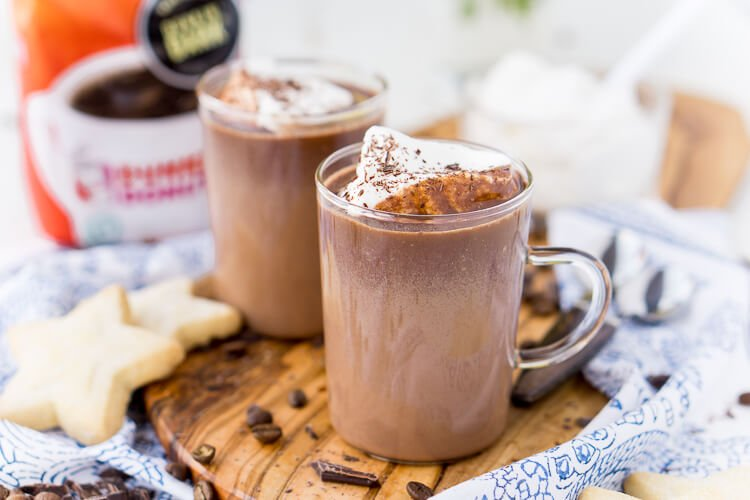
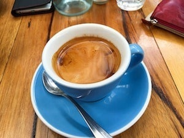
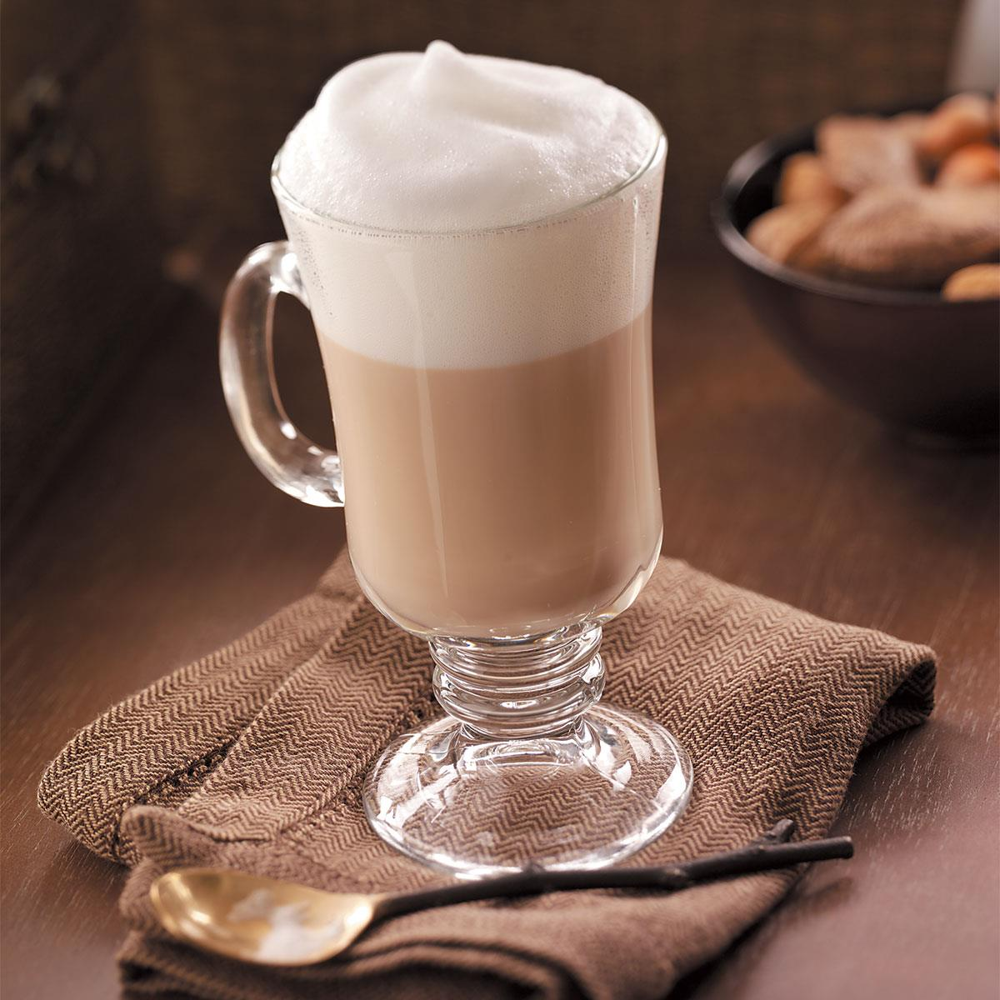
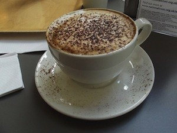
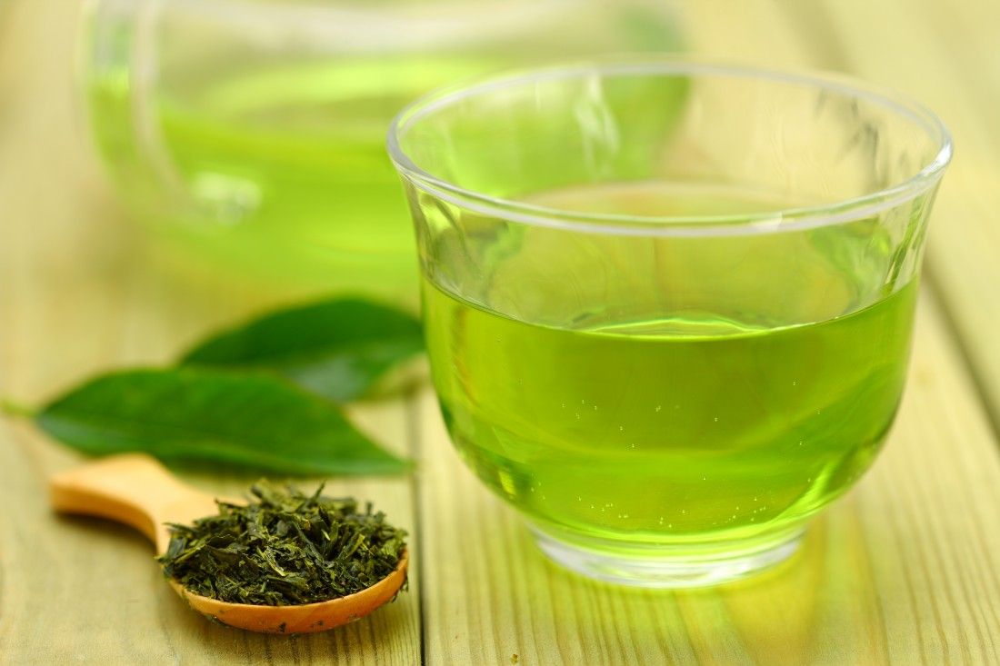
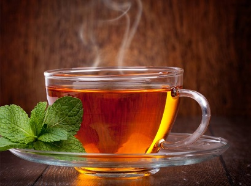

We provide organic, delicious tasting coffee flavors everyday!
Each flavor is crafted with unique blends of our most delicious flavors, also available for purchase whole bean.
The beans we roast, grind, and brew to make coffee are the seeds of a fruit.
The coffee plant produces coffee cherries, and the beans are the seeds inside.
A coffee bean is originally a derivative (a seed) of a plant, Coffeaarabica which is further useful for having our wonderful Coffee ! A Bean is basically a pit inside it's fruit, usually referred to as Cherry. Upon moving further towards more information, beans are not actually beans, but instead they are called so beacuse of their resemblance to true beans. A small percentage of cherries contain a single seed, instead of the usual two. This is called a "peaberry". The peaberry occurs only between 10 and 15% of the time, and it is a fairly common (yet scientifically unproven) belief that they have more flavour than normal coffee beans.
The two most economically important varieties of coffee plant are the Arabica and the Robusta. According to the latest researches, around 60% of the coffee produced worldwide is Arabica and 40% (appx.) is Robusta. Arabica beans consist of 0.8–1.4% caffeine and Robusta beans consist of 1.7–4% caffeine. As coffee is one of the world's most widely consumed beverages, coffee beans are a major cash crop and an important export product, accounting for over 50% of some developing nations' foreign exchange earnings.
Alright so, this was just about the beans that are use in making coffee; now comes the other
element ,i.e., Leaves
LEAVES :
Just like the Beans, coffee leave shave also been derived from either of two coffee plant varities (Coffea arabica or Coffea robusta). These leaves have also been used extensively in preparartion of coffee, but most of the times it has been involved in making Coffee-leaf-tea. These leaves, after being roasted, can be ground up or crumpled, then brewed or steeped in hot water in a form similar to tea. The resulting beverage is similar in taste to green tea, but with less caffeine content than either regular tea or coffee. Coffee leaves closely resemble the leaves and stalks of Paraguay tea (Ilex paraguariensis).
The benefits of having these Beverages :
Now here comes the interesting part, the benefits of these lovely beverages.
1. The scientists found that “coffee leaf tea” contained high levels of compounds credited with lowering the risk of heart disease and diabetes.
2. The leaves contain more antioxidants than normal tea – which is already renowned for its healthy properties – and high levels of a natural chemical found in mangos known to combat inflammation.
3. The researchers believe the leaves of Coffea plants, as they are known scientifically, have been largely overlooked due to high value placed on coffee beans, which are actually seeds inside cherries produced by the small green shrub. These contain far fewer of the healthy compounds.
4. The drink, which contains low levels of caffeine, has earthy taste neither as bitter as tea nor as strong as coffee.
5. And last but not the least, the amount of antioxidants in coffee leaves is in much more amount than in the most commonly used Green Tea and Black Tea.
TYPES OF COFFEE :
A coffee blend is a mixture of two or more different origin coffee beans that are mixed together.
... Normally single origin coffees are roasted on a light to medium roast in order for them to maintain the maximum amount
of the unique origin flavour as possible. There are two main species of coffee tree that grow on plantations, Arabica and Robusta.
Arabica coffee is coffee that grows on trees. Robusta coffee grows on a wild shrub or a vine, not so much a “tree.”
The former is usually more expensive - quite simply because it tastes better than Robusta.
There are different types of coffees available :
1. Expresso (Short Black)
The espresso (aka “short black”) is the foundation and the most important part to every espresso based drink. Espresso consists of:
• 1 Shot of espresso in an espresso cup
2. Hot Chocolate
Hot chocolate, also known as drinking chocolate, cocoa, and as
chocolate tea in Nigeria, is a heated drink consisting of shaved chocolate, melted chocolate or cocoa powder,
heated milk or water, and usually a sweetener. Hot chocolate may be topped with whipped cream or marshmallows.
Hot chocolate made with melted chocolate is sometimes called drinking chocolate, characterized by less sweetness and a thicker consistency.

3. Long Black (Americano)
A long black (aka “americano”) is hot water with an espresso shot extracted on top of the hot water. It is made as follows:
• Fill a cup with 2/3rds full of hot water• Extract 1 shot of espresso over the hot water
Barista Tip: Make sure you back-wash your portafilter before making a long black, otherwise you might find grinds from your coffee grinder floating in your coffee.

4. French Vanilla
French Vanilla is a creamy blend of vanilla and cream is perfect for a luxury coffee drink.
You'll find it in all sorts of types. Being one of the most popular options out there, you can find it quite easily to sample.

5. Cappuccino
A cappuccino is similar to a latte. However the key difference between a latte and cappuccino is that a cappuccino has more foam and chocolate placed on top of the drink. Further a cappuccino is made in a cup rather than a tumbler glass. It is made as follows:
• Extract 1 shot of espresso into a cup• Add steamed milk• Add 2-3cm of micro-foam on top of the steamed milk• Sprinkle chocolate on top of the coffee

6. Mocha
A mocha is a mix between a cappuccino and a hot chocolate. It is made by putting mixing chocolate powder with an espresso shot and then adding steamed milk and micro-foam into the beverage. The steps are as follows:
• Extract 1 shot of espresso into a cup• Add one spoon of chocolate powder into the espresso shot and mix• Add steamed milk• Add 2-3cm of micro-foam• Sprinkle chocolate powder on top
7. Green Tea
Green tea is a type of tea that is made from Camellia sinensis leaves and buds that have not undergone the same withering and oxidation
process used to make oolong teas and black teas. Green tea originated in China, but its production and manufacture has spread to other countries in East Asia.

8. Black Tea
Black tea is a type of tea that is more oxidized than oolong, green, and white teas.
Black tea is generally stronger in flavor than other teas. All four types are made from leaves of the shrub (or small tree)
Camellia sinensis. Two principal varieties of the species are used – the small-leaved Chinese variety plant
, used for most other types of teas, and the large-leaved Assamese plant , which was traditionally mainly used for black tea,
although in recent years some green and white teas have been produced.

CONTACT US AT THE FOLLOWING LINKS :
WE PROMISE OUR WARM WELCOME AND OUR FULL CO-OPERATION WITH YOU